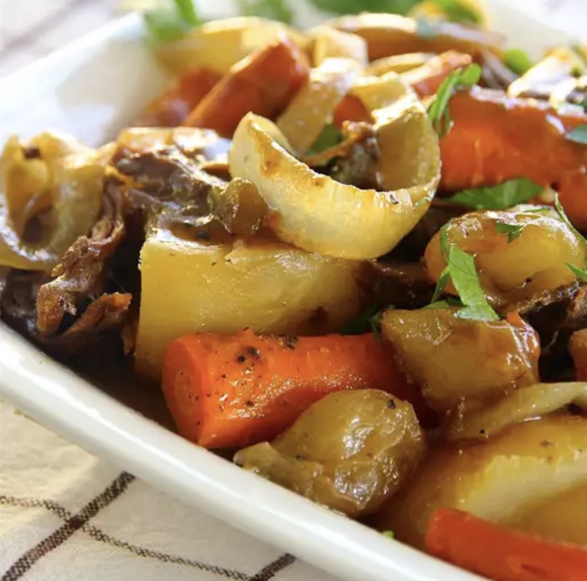
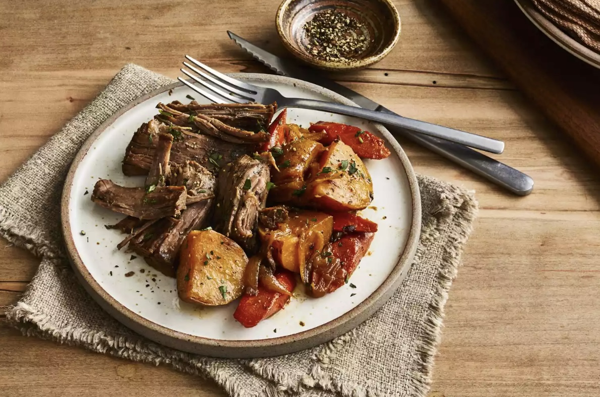

Pot Roast
This rump roast recipe is the oven version of the original I got from my mother.
It is unbelievably delicious.

- Prep Time: 20 mins
- Cook Time: 4 hrs
- Total Time: 4 hrs 30 mins
- Servings: 8
Ingredients
- 1 tablespoon vegetable oil
- 1 (4 pound) beef pot roast
- 1 tablespoon brown sugar
- 1 tablespoon salt
- 1 tablespoon dry mustard
- ¼ teaspoon black pepper
- 3 large potatoes, quartered
- 3 carrots, peeled and cut into 2-inch pieces
- 1 onion, sliced
- ⅓ cup vinegar
- ⅓ cup water
Directions
Step 1
Preheat the oven to 325 degrees F (165 degrees C).
Step 2
Heat vegetable oil in a Dutch oven over medium heat.
Cook roast in hot oil until browned on all sides, 2 to 3 minutes per side.
Step 3
Mix together brown sugar, salt, mustard, and black pepper in a small bowl;
sprinkle evenly over roast. Arrange potatoes, carrots, and onion in the Dutch oven around roast.
Pour vinegar and water over vegetables.
Step 4
Cover and cook in the preheated oven until roast is hot in the center and just turning from
pink to grey, about 4 hours. An instant-read thermometer inserted into the center should read
150 degrees F (65 degrees C).
